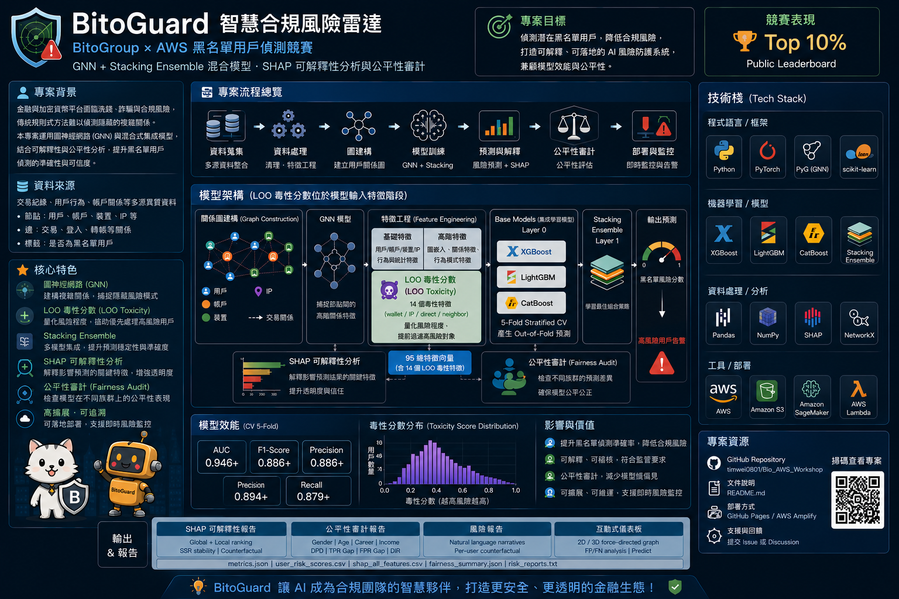
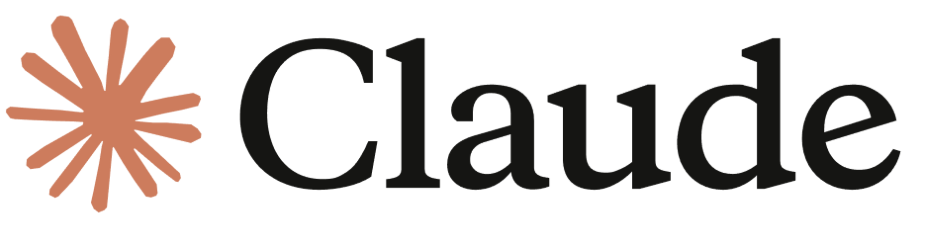
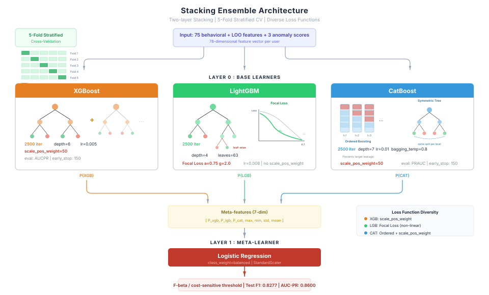
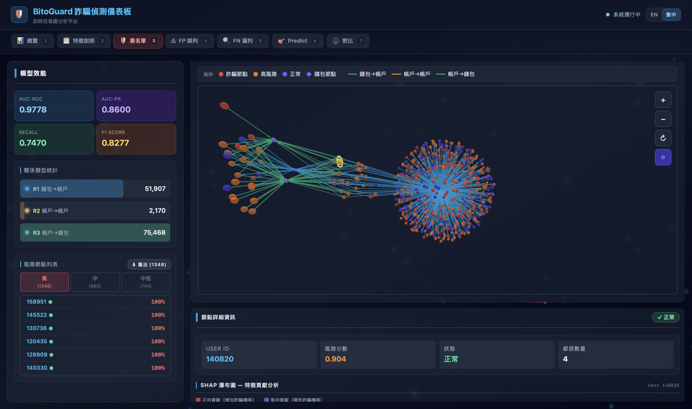
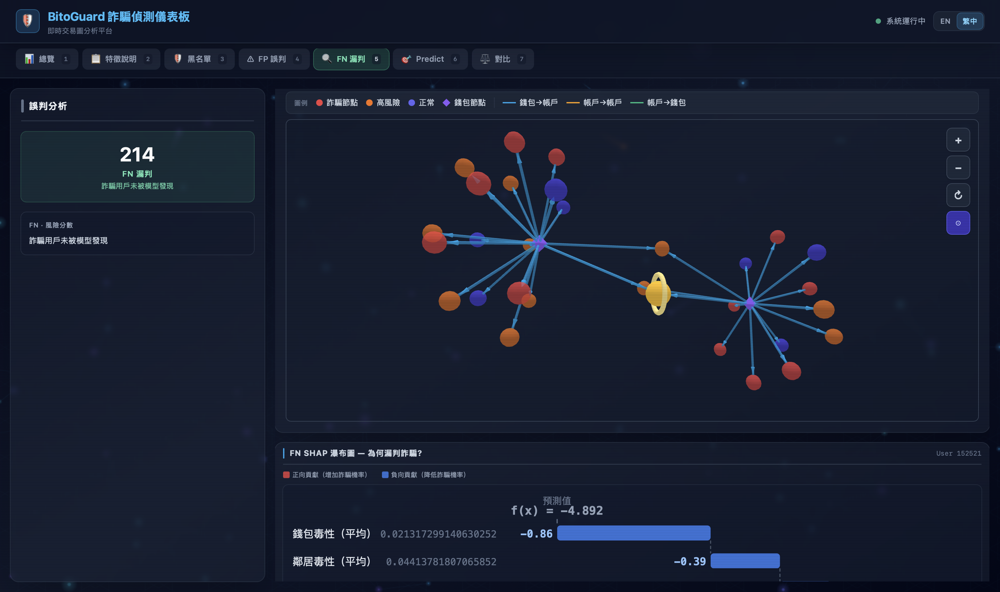
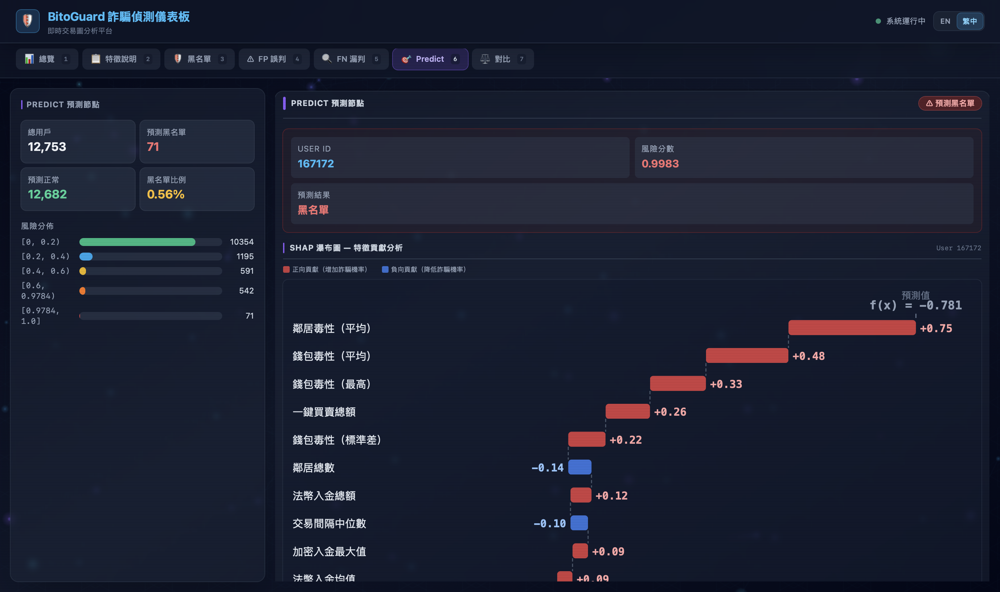

研究背景
加密貨幣交易所長年面臨嚴重的 人頭戶（黑名單用戶） 問題 ── 這些帳戶被用於洗錢、詐騙資金流轉，每年造成全球數十億美元損失。
本團隊針對幣託科技 (BitoPro) 77 萬筆交易紀錄 建構端到端 AML 風險偵測系統。 核心洞見：關聯力大於行為力 ── 人頭戶往往集中在相同的錢包、IP 與轉帳對象。 因此結合 LOO 毒性特徵（圖訊號 → 表格特徵） 與 三模型 Stacking 集成，F1 由 0.37 一舉突破至 0.83。

77萬
訓練交易筆數
+121%
F1 相對提升
0.978
AUC-ROC
學生面臨的挑戰
作為研究生團隊，我們在 2 天競賽期程 內同時面對 5 大難題：
- 跨領域整合：AML 法遵 × 機器學習 × 圖訊號處理
- 極度不平衡資料：黑名單僅佔 3.2%，傳統 F1 僅 0.37
- 陌生技術棧：SHAP / Focal Loss / Stacking / React + Three.js
- 作法移植：理解並重現 LOO 毒性特徵與洩漏防護
- 從研究到產品：交付對外可訪問的互動式 3D 風險儀表板
使用的生成式 AI 工具
★ Claude Code
Claude Web
Kiro
Gemini
AWS Devops
以 Claude Code 作為核心協作 IDE，貫穿從賽題理解、Repo 解析、特徵工程、模型集成、 全端開發到報告與本海報撰寫的完整研究生命週期。
- Claude Code：主力 IDE，負責程式碼生成、重構、除錯與部署
- Claude Web：AML 文獻摘要、跨領域知識補強、長文件分析
- Kiro：輔助IDE，使用Kiro Spec To Code 整合開發前端頁面顯示
- Gemini：整合在vscode裡面，使用在前端頁面美編
- AWS Devops：使用AWS Amplify 工具進行程式部署

本研究核心協作工具 · by Anthropic
生成式 AI 協作工作流 ── 從零到上線的 6 階段
核心理念 —— AI 不是「代寫工具」，而是研究夥伴。
學生負責「提問、判斷、驗證」；AI 負責「探索、提案、加速產出」。
每個階段都明確區分人類與 AI 的角色，學會批判性協作。
01
賽題理解與文獻探索
將 BitoPro 賽題說明、77 萬筆交易資料字典與 20+ 篇 AML / 圖學習論文
一次丟給 Claude，做多文件摘要、橫向比較與研究缺口盤點。學生再聚焦關鍵段落、交叉驗證 AI 引用是否
真實存在，最終拍板「LOO 毒性 + Stacking 集成」作為核心方法論主軸。
02
Repo 程式碼拆解
把團隊（gttthuang/Bito）整個 repo 餵給 Claude Code，逐檔追蹤
LOO 毒性特徵 的數學公式、Leave-One-Out 洩漏防護機制與向量化資料流，產出中文化
技術筆記與重現清單。學生再手算公式、檢驗邊界 case，確認能 1:1 移植到本團隊 pipeline。
03
特徵工程與資料清洗
5 張原始交易表中，讓 Claude 產出 Pandas 向量化清洗與特徵工程腳本，建構橫跨
11 大類、共 95 維特徵（含 LOO 毒性 14 維、AML 紅旗、交易圖拓撲、時序模式等）。
再依零方差、共線性 (≥ 0.95)、零重要性三道閘關層層篩選至 78 維，並由學生隨時抽查
AI 產出腳本的計算邏輯與資料分布。
04
模型集成與可解釋性
與 AI 共同設計兩層 Stacking 集成：XGBoost、LightGBM (Focal Loss α=0.75, γ=2.0)、
CatBoost 三個 base learner 各使用不同損失函數以最大化多樣性，搭配 Logistic Regression meta-learner。
再導入 SHAP TreeExplainer、SSR 穩定性檢測、反事實建議，以及性別 / 年齡 / 職業 / 收入
四維度公平性審計，把模型從黑箱推進到可解釋、可審計。
05
互動式 3D 風險儀表板
學生先定義三種檢視模式 (Fraud / FP-FN / Predict) 的規格與 UX 流程，再由
Claude Code 從零搭建 React 18 + TypeScript + Vite 全端架構。整合
react-force-graph 2D / 3D 力導向圖譜、Three.js 即時渲染、Recharts 與 SHAP Waterfall 圖，
一鍵部署到 GitHub Pages 成為對外可訪問的互動式儀表板。
06
報告 / 簡報 / 海報
中英 README、LOO 突破完整實驗報告、競賽簡報、學會發表稿、本份海報 ──
皆透過 AI 協助 outline 規劃、結構編排、語言潤飾與 SVG 圖表生成，大幅縮短重複工序。
學生則全程把關內容真實性、數據引用核對與專業判斷，避免任何 hallucination 流入正式產出。
Stacking 集成模型架構

Base：XGBoost · LightGBM（Focal Loss） · CatBoost → Meta：Logistic Regression
模型效能 vs 基準（LOO 突破前後）
| 模型 | F1 | AUC-PR | AUC-ROC | Recall |
|---|---|---|---|---|
| Stacking + LOO (本研究) | 0.828 | 0.860 | 0.978 | 0.747 |
| Stacking (無 LOO 特徵) | 0.375 | 0.326 | 0.864 | 0.396 |
| XGBoost 單模 | 0.351 | 0.301 | 0.851 | 0.378 |
| LightGBM (Focal Loss) | 0.342 | 0.295 | 0.847 | 0.401 |
| CatBoost 單模 | 0.330 | 0.284 | 0.839 | 0.366 |
| Logistic Regression | 0.218 | 0.180 | 0.792 | 0.293 |
線上系統實際畫面 ── BitoGuard 互動式風險儀表板

Fraud Mode · 3D 力導向交易網路

FP / FN Mode · 誤判案例 SHAP Waterfall

Predict Mode · SHAP 風險歸因